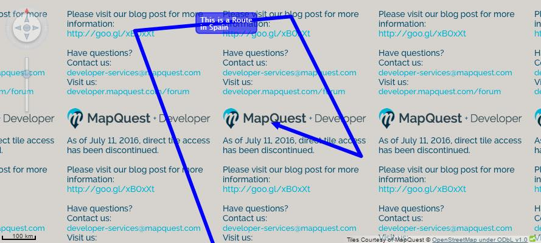
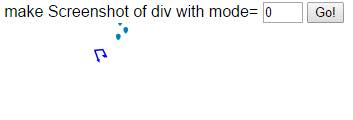
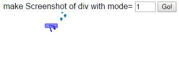

Visual Business UI5: Minimizing the Control to a Thumbnail
The aim:
To test zoom and detail window in thumbnail mode aswel as create screenshots of thumbnail.
To test:
- Click "Allow Events on Thumbnail" and interact with the map. There should be an alert box asking for you to 'Please confirm to activate the control'. Click OK.
The thumbnail should increase in size
- click button "Zoom to world". This will zoom to geo position : (0, 28, 0);
- longitude = 0
- latitude = 28
- lod = level of detail = 0
You should see 3 spots. a large label displaying "This is a Route in Spain" and behind the label should
be a route in spain.
- Double click "Zoom To Spain". The GeoMap should display a route around Spain.
Check that you can see the route label "This is a Route in spain"

- Click on button 'Detail Window' and check that you can see a detail window on the map. You will need to zoom in order to find the detail window
- in input box "make Screenshot of div with mode" choose a "Mode" value and click "Go!".
What is Screenshot?
Returns a Screenshot of the Overlay. Please note that the map cannot be included due to browser restrictions. Function returns the visible part of the Canvas excluding map, copyright info, navigation control, scaler, legend, detail windows, container elements.
What modes can i choose from?
- 0 - Overlay only

- 1 - Default - Include labels

2 and 3 try to include maps - 3 inlcudes the map with labels- These 2 modes are experimental.